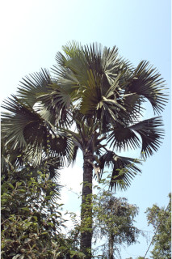
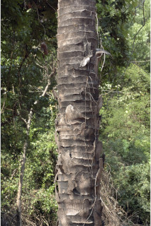
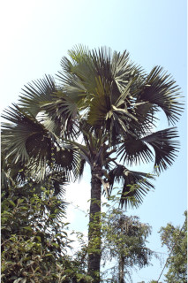
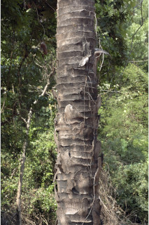
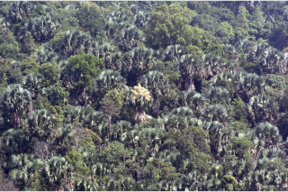
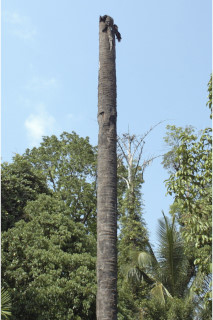
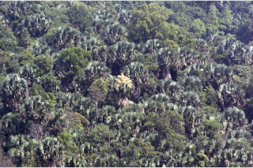
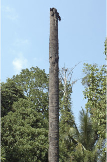

Palms up to 20 m tall.
20ಮೀ ಎತ್ತರದವರೆಗೆ ಬೆಳೆಯುವ ತಾಳೆ ಅಥವಾ ತೆಂಗು ಸಂಬಂಧಿ ಮರ
20 മീറ്റര് വരെ ഉയരത്തില് വളരുന്ന പനകള്.
பனைவகை மரங்கள் 20 மீ. வரை வளரக்கூடியது
Trunk with annular leaf scars.
ಕಾಂಡವು ವಲಯಾಕಾರದ ಎಲೆಯುದುರು ಗುರುತುಗಳನ್ನು ಹೊಂದಿರುತ್ತದೆ.
വാര്ഷിക, ഇല അടയാളങ്ങളോടു കൂടിയ, തായ്ത്തടി.
தண்டு இலை உதிர்ந்ததால் உண்டாகும் வட்டவடுக்களுடையது.
Leaves compound, palmate, circular or sublunate; rachis stout, concave, spinous at the edges; lamina plicate, cleft to about the middle into 80-100 linear lanceolate bifid lobes.
ഹസ്താകാരമോ വൃത്താകാരമോ അര്ദ്ധ ചന്ദ്രാകാരമോ ആയ ബഹുപത്രങ്ങള്; ദൃഢവും അകം കുഴിവുള്ളതും ചെറുമുള്ളോട്കൂടിയ അരികുളുളളതിമായ മുഖ്യാക്ഷം ഞൊറിപോലുള്ള മടക്കുകളോട് കൂടിയ പത്രഫലകം; മധ്യഭാഗം വരെയെത്തുന്ന കീറലോട് കൂടിയ 80 മുതല് 100 വരെ, രേഖീയ കുന്താകാരത്തിലുള്ള ദ്വിഖണ്ഡിത ഭാഗങ്ങള്.
இலைகள் வட்டவடிவானது (ஆர்பிக்குலார்) அல்லது பிறைச்சந்திர வடிவானது; மத்திய காம்பு தடித்தது, ஒரங்களில் முட்களுடையது; இலை மடிப்புகளுடையது (ஃபிளிகேட்), இலை அலகு 80-100 கோட்டு-ஈட்டி வடிவ பிளவுகளை கொண்டதாக காணப்படும், அவை தளத்திலிருந்து இலை அலகின் பாதி வரை இணைந்தவை, அலகின் நுனி இருபிளவுகளுடையது.
Inflorescence spadices, terminal erect, paniculate, pyramidal, spathes many, tubular, flowers small, bisexual.
ಎಲೆಗಳು ಹಸ್ತರೂಪಿ ಸಂಯುಕ್ತ ಗರಿ ಮಾದರಿಯವು. ಆಕಾರದಲ್ಲಿ ವೃತ್ತಾಕಾರ ಅಥವಾ ಅರೆ ಚಂದ್ರಕಾರ ಹೊಂದಿರುತ್ತವೆ. ಸಂಯುಕ್ತ ಎಲೆಗಳ ನಡುಕಾಂಡ ಧೃಡವಾಗಿದ್ದು ನಿನ್ನ ಮಧ್ಯ ಅಥವಾ ಪುಟಾಕಾರ ಹೊಂದಿದ್ದು, ಅಂಚುಗಳು ಮುಳ್ಳು ಸಮೇತವಿರುತ್ತವೆ. ಪತ್ರಗಳು ಮಡಿಕೆಗಳನ್ನೊಳಗೊಂಡಿರುತ್ತವೆ. ಅಂದಾಜು ಮಧ್ಯಭಾಗದಿಂದ ಪತ್ರ ಒಡಕುಗೊಂಡು 80 ರಿಂದ 100 ರೇಖಾತ್ಮಕ ಭರ್ಜಿಯಾಕಾರದ ದ್ವಿವಿಭಾಗಗೊಂಡ ಹಾಲೆಗಳಾಗಿ ಮಾರ್ಪಡಿಸಲ್ಪ-ಟ್ಟಿರುತ್ತವೆ.
പിരമിഡാകൃതിയിലുളള, ഉച്ഛസ്ഥമായ, കുത്തനെ നില്ക്കുന്ന പാനിക്കുലേററ് സപാഡിക്സ് പൂങ്കുലകള്, കുഴലാകാരത്തിലുളള ധാരാളം കൊതുമ്പുകള്, ചെറിയ പൂക്കള്, ദ്വിലിംഗികളാണ്.
மஞ்சரி பாளைகள் (ஸ்ஃபாடிக்ஸ் வகை), மரத்தின் நுனியில் தோன்றுவது, நிமிர்ந்தது, பேனிக்கிள்டு பிரமீடைப் போன்று அமைந்தது, ஸ்பேத் எண்ணற்றது, குழாய் போன்றது, மலர்கள் சிறியது; இருபாலானவை.
Drupe; 1-seeded, albumen not ruminate.
ಪುಷ್ಪಮಂಜರಿ ತುದಿಯಲ್ಲಿನ ನೇರವಾಗಿದ್ದು ಹೊಂಬಾಳೆ ಮಂಜರಿರೂಪದವಾಗಿದ್ದು ಕವಲುಗಳನ್ನೊಳಗೊಂಡು, ಪಿರಮಿಡ್ ಆಕಾರದಲ್ಲಿದ್ದು ಹಲವಾರು ಕೊಳವೆಯಾಕಾರದ ಆವರಣಪತ್ರಕಗಳನ್ನು ಹೊಂದಿರುತ್ತವೆ.
അഭ്രകം; ഒറ്റവിത്ത്, ആല്ബുമിന്, പക്ഷേ റൂമിനേറ്റല്ല.
உள்ளோட்டுத்தசைகனி; 1-விதையுடையது

 



 


